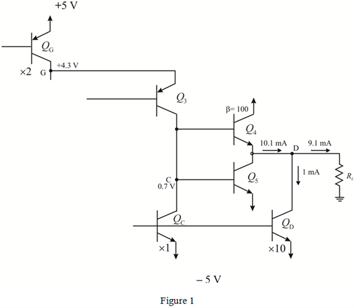

Step 1:
(a)
Refer to Figure P8.120 in the textbook.
Consider that the base-emitter voltage of all the transistors is, , the current gain,  is very high, and the ground voltage is,
is very high, and the ground voltage is,  .
.
Write the nodal equation at node,  .
.
Write the nodal equation at node,  .
.
Write the nodal equation at node,  .
.
The node,  is grounded. Therefore,
is grounded. Therefore,
Write the nodal equation at node,  .
.
The ground voltage is  for both transistors. So, the node equation is,
for both transistors. So, the node equation is,
Step 2:
Write the nodal equation at node,  .
.
Write the nodal equation at node,  .
.
Apply Ohm’s law to find the resistance,  so that the current, .
so that the current, .
The value of resistance,  is , the node voltages at node are respectively, ,
is , the node voltages at node are respectively, ,  ,
,  , , ,
, , ,  , and .
, and .
Step 3:
(b)
The reference current,  flows through transistor, matches with the currents in
flows through transistor, matches with the currents in  ,
,  ,
,  , , and . Hence, the current flow in these transistors is
, , and . Hence, the current flow in these transistors is  .
.
The current in transistor, and are current,  multiplied by a factor of 2. Hence, the current flow through these transistors is
multiplied by a factor of 2. Hence, the current flow through these transistors is  .
.
Similarly, the current in transistor, is 10 times the current,  . Hence, the current flow in this transistor is .
. Hence, the current flow in this transistor is .
The thermal equivalent voltage is, .
The transconductance of the high gain transistor  is,
is,

Similarly, for the other transistors the transconductance are,
Step 4:
The intrinsic output resistance is,
Similarly, for the other transistor the intrinsic output resistance are,
The output resistance for the remaining transistors are,
Step 5:
(c)
The total resistance of the collector of transistor,  is,
is,

The voltage gain ratio at the transistor,  is,
is,
And
Hence, the gain is, .
Step 6:
(d)
The input resistance is,
The input resistance of the resistor,  is,
is,  .
.
The output resistance is,
The output resistance of the resistor,  is, .
is, .
Step 7:
(e)
The input common mode range is,
Thus, the input common mode range is,  .
.
Step 8:
(f)
The maximum voltage at the base of transistor,  can go to before
can go to before  goes into saturation, that is,
goes into saturation, that is,

The output of the amplifier can go down to a voltage of of transistor, , that is,
Hence the linear output range is, .
Step 9:
(g)
The following is the circuit diagram of the amplifier with  just cut-off.
just cut-off.

Step 10:
Consider that the positive maximum of the output is .
The minimum resistance,  in the circuit such that the transistor,
in the circuit such that the transistor,  is cut-off is,
is cut-off is,
Thus, the minimum resistance, is, .
At the negative maximum of  , the transistor,
, the transistor,  ,
,  and
and  are cut-off.
are cut-off.
Similarly, the minimum resistance,  , such that the transistor,
, such that the transistor,  is cut-off is,
is cut-off is,
Thus, the minimum resistance,  is,
is,  .
.